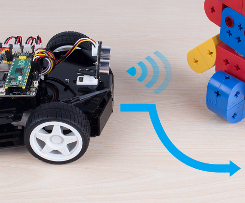

Obstacle Avoid¶

Let Pico-4wd do a challenging task: automatic obstacle avoidance! Instead of simply stepping back when an obstacle is detected, the radar scans the surrounding area to find the widest road.
You can build a goal of the right size and watch it find the right place and slowly cross it.
{kind=link}
Code¶
Note
Open the
obstacle_avoid.pyfile under the path ofpico_4wd_car\examplesor copy this code into Thonny, then click “Run Current Script” or simply press F5 to run it.Don’t forget to click on the “MicroPython (Raspberry Pi Pico)” interpreter in the bottom right corner.
For detailed tutorials, please refer to Open and Run Code Directly.
import pico_4wd as car
import time
car.RADAR_REFERENCE = 20
car.RADAR_STEP_ANGLE = 10
MOTOR_FORWARD_POWER = 30
MOTOR_TURNING_POWER = 50
FORWARD_SCAN_ANGLE = 50
car.set_radar_scan_angle(FORWARD_SCAN_ANGLE)
status = "Danger"
def get_dir(radar_data):
# get scan status of 0, 1
# print(radar_data)
radar_data = [str(i) for i in radar_data]
radar_data = "".join(radar_data)
# Split 0, leaves the free path
paths = radar_data.split("0")
# print(paths)
# print("paths: %s" % paths)
length_list = []
# Calculate where is the widest
for path in paths:
length_list.append(len(path))
if max(length_list) < 4:
return "left"
# Calculate the direction of the widest
i = length_list.index(max(length_list))
pos = radar_data.index(paths[i])
pos += (len(paths[i]) - 1) / 2
delta = len(radar_data) / 3
if pos < delta:
return "right"
elif pos > 2 * delta:
return "left"
else:
return "forward"
def main():
# General
while True:
radar_data = car.radar_scan()
# print("radar_data: %s" % radar_data)
# If radar data return a int, means scan not finished, and the int is current angle status
if isinstance(radar_data, int):
if radar_data == 0 and status != "Danger":
print("Danger!")
status = "Danger"
car.move("stop")
car.set_radar_scan_angle(180)
continue
else:
status = "Save"
direction = get_dir(radar_data)
if direction == "left":
print("turn left")
distance = car.get_radar_distance_at(FORWARD_SCAN_ANGLE/2)
time.sleep(0.5)
car.move("left", MOTOR_TURNING_POWER)
while True:
distance = car.get_radar_distance_at(FORWARD_SCAN_ANGLE/2)
status = car.get_radar_status(distance)
if status == 1:
break
car.move("stop")
car.set_radar_scan_angle(FORWARD_SCAN_ANGLE)
elif direction == "right":
print("turn right")
distance = car.get_radar_distance_at(-FORWARD_SCAN_ANGLE/2)
time.sleep(0.5)
car.move("right", MOTOR_TURNING_POWER)
while True:
distance = car.get_radar_distance_at(-FORWARD_SCAN_ANGLE/2)
status = car.get_radar_status(distance)
if status == 1:
break
car.move("stop")
car.set_radar_scan_angle(FORWARD_SCAN_ANGLE)
else:
print("forward")
car.set_radar_scan_angle(FORWARD_SCAN_ANGLE)
car.move("forward", MOTOR_FORWARD_POWER)
try:
main()
finally:
car.move("stop")
car.set_light_off()